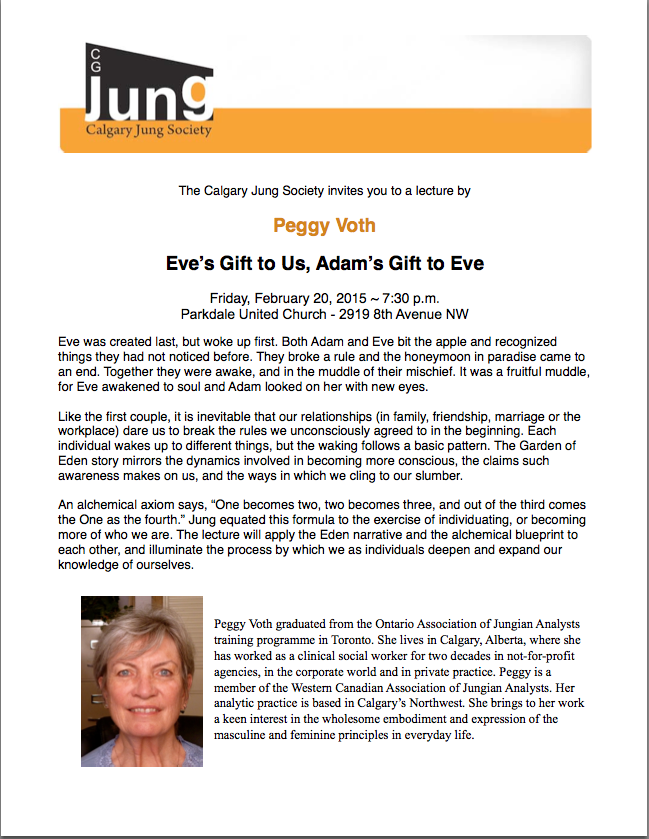

Gatherings
I am interested in women’s power: where it comes from, what it looks like, how it has been silenced and the ways in which it is becoming visible today. The gatherings that I host address female authority in some way.
Past Events
{kind=link}
The Mystery School group of four years just wrapped up. We learned much about the nature of the feminine principle. Starting with the intention of producing a drama about the women surrounding Jung, our explorations evolved over the years, yet always centred on what it means to be a natural woman. Leadership and content were fluid, taking many forms: deep sharing, the study of books, viewing and discussing movies, somatic movement, asking questions, eating together, seeing each other’s creative works. It has been a rich time.
__________________________________________________________________________________________________________
{kind=link}
Friday, May 27, 2022, I gave a talk at a breakfast meeting of the Calgary Spiritual Companions on bringing an equity of value to the archetypal feminine and masculine principles. The degree of balance shows up in our attitudes and behaviours.
___________________________________________________________________________________________________________
On March 25, 2022, I will be lecturing at the Calgary Jung Society on the following topic. To register, visit http://calgaryjungsociety.org/events
{kind=link}
Two Men, a Woman and a Fish
In a dream, two men stand on a river bank with fishing rods, casting for fish. On the other side of the river, a woman comes out of a cave, plunges her hands into the water and brings up a fish, flashing silver.
This dream image shows two methods of fulfilling what is needed. It introduces us to the realms of the masculine and feminine functions and the intelligence that accompanies each, which is what this lecture is about. The feminine is at home in the world of the unseen; she lives in a cave and reaches into the depths for nourishment. The masculine moves and lives in the visible outer world; he obtains sustenance and shelter by using tools he has crafted.
In 1912, Jung’s essay titled “Two Kinds of Thinking” was published. He identifies these styles of thinking as non-directed and directed, associative and logical, unconscious and conscious. One is linked to instinctual knowing, the other to mental capacity. Like his era and our modern one, women’s way of thinking has been seen as inferior to men’s. The men’s rational approach was, and still is, highly valued. Women’s inclusive perspective is often discounted. Yet both have much to contribute. When each is acknowledged and taken seriously, we as individuals––and life itself––are enriched.
The lecture will consider these differing types of intelligence and forms of thinking. Use of the terms “feminine” and “masculine” is intentional. They refer to the feminine and masculine principles in the human psyche. As Jungian terminology, they express many qualities that are natural to females and to males in general, but they are not exclusive to either sex. Any person can develop both kinds of thinking and intelligence.
____________________________________________________________________________________
My book, The Nature of Woman, will be featured in the online Calgary Jung Society book club starting Wednesday, September 29, 2021, 7:00 pm and running through April 2022. For more information, visit http://calgaryjungsociety.org/events/
{kind=link}
____________________________________________________________________________________
A second performance of the dramatic reading shown below will take place on Wednesday evening, May 13, 2020. The reading will follow a short presentation about several of the other women surrounding Jung, such as Marie Louise von Franz, Barbara Hannah and Linda Fierz-David. Visit the Society website at http://calgaryjungsociety.org
Cancelled due to Covid-19
_____________________________________________________________________________________________________
A dramatic reading of Elizabeth Clark-Stern’s play-script “Out of the Shadows: A Story of Toni Wolff and Emma Jung” took place after the Calgary Jung Society AGM on January 24, 2020.

{kind=link}
To register for the Core Concepts class, go to
http://calgaryjungsociety.org/
{kind=link}
The Myth You Came to Live: A Talk and a Writing Exercise
Friday, March 17, 2017 ~ 7:30 – 8:30 pm
In Memories, Dreams, Reflections, Jung speaks of a personal myth. Several times in his life, he identified myths that he was not living (his father’s, for instance, who joined a long line of clergymen, nor his mother’s, who was interested in occult sources of wisdom). Eventually, he asked, “What is my myth?”
This is a question that many of us ponder at midlife, at midnight, at midday. We ask, Who am I, really? What am I really about? What is the meaning of my life? These things puzzle us, and are not easy to answer. They defy a concrete, set-in-stone answer. Stories and poetry often move us closer to a “felt” purpose, the hint of an answer.
A conception-story out of Africa invites us to go back to when time began for us as a soul coming to earth inside a physical body. The story will lead us into an exercise intended to turn our attention toward the essence of who we are –– who each of us is personally, and always has been.
Friday night’s short talk sets the stage for Sunday’s experiential workshop. Come with curiosity about your soul-self. Bring writing materials. The closing exercise aims to provoke thought throughout Saturday and contribute to a different exploration of your life on Sunday. Specific materials that you need to bring to Sunday’s event will be described.
The Myth That Is Living You: A Hands-on Workshop
Sunday, March 19, 2017 ~ 10:00 – 4:00
Jung’s near-death experience in his late sixties turned his myth-question on its head. In a dream, he saw a yogi sitting in contemplation. Upon closer examination, he realized that the figure had his face and that Jung himself was the manifestation of the yogi’s dream. His query then became What myth is living me? We will entertain this question in a day-long workshop.
Part of what makes the question “why am I here?” so difficult is that we cannot stand outside the myth that we are living. We are in the myth. It surrounds us, breathes us, lives us. Looking back on Jung’s life, we can perhaps perceive the essence of his life easier than he was able to do. He poured his heart, soul, and life force into his work. Yet he sometimes asked what the use of it all was, for resistance, judgment and misunderstanding plagued his attempts to articulate his fascination with the psyche. Today we experience the value of his efforts, and are grateful for his work.
Sunday’s hands-on workshop will open with a diagrammatic sketch of Jung’s life. This will introduce the day’s work. Through guiding questions designed to help you gather and group your experiences, you will create an intersecting timeline of your life so far. This exercise can act as a visual aid for recognizing patterns that have been playing themselves out. Pondering what these patterns might signify, and how you feel about them, will hopefully move you toward a more textured grasp of what your life is about. Combining these reflections with those of Friday evening are intended to produce a deeper awareness of the you that is being dreamed into being.
{kind=link}
Introduction to the Core Concepts of Jungian Psychology
facilitated by local analyst Peggy Voth
through the Calgary Jung Society
November, 2016
Do you ever go to a lecture at the Calgary Jung Society and wonder what on earth the presenter is talking about when they refer to an “archetype” or to the “Self” (with a big S)? Do you question how complex a “complex” can be? Or puzzle over “the shadow” – where is it, and of what? If the “unconscious” is unconscious, how can we talk about it? Some of these words have crept into our everyday language. Perhaps we assume we know what they refer to, but do we? What did Jung mean by these concepts? Come to this seminar and find out!
A 5-week seminar offered by the Society is intended to help you get your head around some of the basic ideas that underlie Jungian psychology. These concepts provide an approach to understanding ourselves. In this seminar we will not only explore how Jung developed these ideas but also look at how these concepts can be useful when applied to our everyday experience. What does it look like when our “shadow” is activated? How do we know when we are in a “complex”? This seminar is an introduction; no previous reading or study is required to register. Readings may be assigned during the course of the seminar.
Registration is limited to 12 people in order to provide opportunity for fruitful discussion.
Running every Tuesday evening in November from 7:00 to 9:00 pm.
November 1 – Archetypes and Complexes
November 8 – Ego and Self
November 15 – Persona and Shadow
November 22 – Anima and Animus
November 29 – Individuation
To register for the class, go to
http://calgaryjungsociety.org/event-list/
Adult Daughters Look Back on Being Mothered by an Incest Survivor Wednesday, September 21, 3:00pm
{kind=link}
Abstract
Introduction
How are girls affected by a mother’s history of familial sexual abuse? This presentation explores the second-generation effects of incest on daughters. While many of the perceptions of the daughters about the mothering they received were negative, it is not the intention of this research to blame the survivors for the difficult dynamics. Rather, the information is offered to raise awareness about the possibility of second-generation effects contributing to the troubles of a child or youth.
Method
My study used a qualitative approach. I interviewed six women whose mothers were survivors of incest. Responses to two exploratory questions generated the data: 1) What is it like to be the daughter of an incest survivor? and 2) How do you think your mother’s incest history affected your life?
Results
Three childhood themes emerged from the narratives. One, the daughters experienced their mothers as having remained children; they referred to this as their mothers failing to grow up. Second, the mother’s emotional neediness marked the interactions between mother and daughter. Third, maternal patterns of parenting included passivity and projection, complicating the developmental tasks of adolescence for the daughters.
Conclusions
The relational patterns that surfaced in the study attest to the power of personal trauma that is not acknowledged or addressed; intergenerational dynamics remain outside conscious awareness and contaminate the survivor’s relationship with her daughter(s). The paucity of research into this area is regrettable since most professionals accept that incest affects a significant portion of the female population.
Our Female Psyches: Gleaning from Maleficent
The movie “Maleficent” stars Angelina Jolie in a modern-day version of Sleeping Beauty. It portrays the psychic situation of contemporary Western women: wounding, rage and a desire for redemption. Centuries of collective contempt for women and girls affect all of us, resulting in unnameable rage. Closer to home are our personal traumas and anger. Our task in relation to both levels of injury and fury is one of re-membering our feminine origins.
To that end, this gathering intends to take us deep into the story of our psyches. Maleficent will guide us through our individual journeys of psychological development, social/cultural shaping, personal suffering, and opportunities for healing.
During our almost 48 hours together, we will view the film in whole and in parts, reflect on our experiences, name our pain, and share food, stories, laughter and tears. An atmosphere of emotional safety will encourage spontaneity, intimacy and connection.
I chose the picture of the young Maleficent for this flyer, rather than the one featured on the DVD cover and in the media. We all start out with wings that free us to explore and a natural attunement to sacred wisdom and guidance, symbolized by the child’s horns. The photo is a reminder of our beginnings.
September 18-20, 2016 – starting with supper Sunday evening, followed by a viewing of the movie, and ending shortly before noon on Tuesday
I will be presenting a paper called “Eve’s Gift to Us, Adam’s Gift to Eve” at the Jungian Society for Scholarly Studies in Santa Fe, New Mexico, on June 27, 2016. The theme of the conference is “Earth/Psyche: Foregrounding the Earth’s Relations to Psyche.”
FAIRYTALE SUNDAYS
April 24 & May 15, 2016
10:00am – 3:30pm
The trials that befall heroes/heroines in fairytales set forth the difficulties and dangers handed to us by nature. Through these characters, fairytales inform us, in a simple and concise manner, about archetypes – those forces that guide, interfere with, and shape our lives. In each day-long gathering, we will study our oh-so-human challenges by reading and combing through a fairytale. Our explorations will include amplification, discussion and giving expression to our feeling-responses through drawing/journaling. Please bring your own lunch.
Sponsored through the Calgary Jung Society. Please visit http://calgaryjungsociety.org/event-list/ and scroll down to Peggy Voth – Fairytale Sundays for more information.
On the first Sunday (April 24), we will explore the fairytale “Jack and the Beanstalk.” Highlighting the masculine aspect of the human psyche, the tale reveals inner and outer dynamics that get in the way of healthy psychological development; it also suggests attitudes and characteristics that help us overcome those obstacles. Please bring a tablet or journal to write in, and a bag lunch.
The feature fairytale on Sunday, May 15, will be “Rumpelstilt-skin.” Through this tale, we enter a world where unconscious contracts are spun. These agreements carry a high price. Most of us have found ourselves in at least one mind-spinning, gut-wrenching bind that we brought on ourselves. The story of Rumpelstiltskin reveals dynamics that get us into such pacts, and what can set us free. Please bring a tablet to write in, and a bag lunch.
MOVIE TIME!
“Inside Out”

Monday, March 7, 2016, 7:00 – 9:30pm
A Disney movie, “Inside Out” personifies a few of the numerous voices we all experience in our heads as we move through our days. Innovative, gorgeously animated, and powerfully moving, the film features an 11-year-old girl whose family has moved to a different city. Teetering on the brink of puberty and plunked into an unfamiliar environment, Riley’s emotions quarrel and rebel and negotiate inside her head. She and her feelings of Anger, Fear, Disgust, Sadness, and the dependable persona-sidekick, Joy, are desperate to navigate the unsettling situation. In the process, many memories and beliefs are shaken up, making room for new configurations to occur.
We will view the entire movie (about 90 minutes). The audience is often moved to tears by this portrayal of life inside our minds and the grievous things we do out of our discombobulated inner Headquarters. Bring a tissue or two, just in case. Chosen by Peggy Voth, you are invited to join her in experiencing and discussing this evocative movie.
Hosted by Calgary Jung Society. For more details, go to
http://calgaryjungsociety.org/event-list/
MOVIE TIME!
“Rabbit Proof Fence”
{kind=link}
Monday, October 5, 2015, 7:00 – 9:30pm
Early in the 1900‘s, Australia boasted the longest fence in the world. Built to keep rabbits and other agricultural pests from invading farmland, it dissected the country north to south and divided wilderness from cultivated territory. Government policy later decreed the abduction of aboriginal children from their tribes, and placement into church missions where they were trained as domestic servants. Victims of this process are now referred to as “The Stolen Generation.”
In 1931, two sisters and their cousin were forcibly taken from their mothers and transported to the training school. The girls escaped, and walked 1500 miles back to their people. “Rabbit Proof Fence” is a drama-documentary that follows the girls’ resistance to the orphaning process by the dominant collective, and their survival on the journey back to home and mother.
Join us for the viewing and discussion of this movie, chosen by Peggy Voth. She will be in attendance and looks forward to the dialogue.
Hosted by Calgary Jung Society. For more details, go to
http://calgaryjungsociety.org/event-list/
{kind=link}
Earthrise – An Initiation of the Collective into the Feminine
I will be presenting the above paper at the Jungian Society for Scholarly Studies in Edmonton on Thursday, June 11, 2015, University of Alberta
{kind=link}
The photo of Earth beamed back from space in 1968 marked a societal transition that still labors to birth itself. Our cultural travail is one of moving from a forceful paradigm founded on patriarchal power toward a yielding paradigm rooted in feminine relatedness. This talk will trace that 40+ year process.
Eve’s Gift to Us, Adam’s Gift to Eve
I will be speaking at Unity Church on Mother’s Day.
May 10, 2015, 10:30 a.m.
2035 26A Street SW, Calgary

Eve was created last, but woke up first. Both Adam and Eve bit the apple and recognized things they had not noticed before. They broke a rule and the honeymoon in paradise came to an end. Together they were awake, and in the muddle of their mischief. It was a fruitful muddle, for Eve awakened to soul and Adam looked on her with new eyes. This Mother’s Day talk will offer a psychological exploration of the Garden of Eden story.

{kind=link}
Visit www.calgaryjungsociety.org for location map, registration and fee information.
{kind=link}
{kind=link}